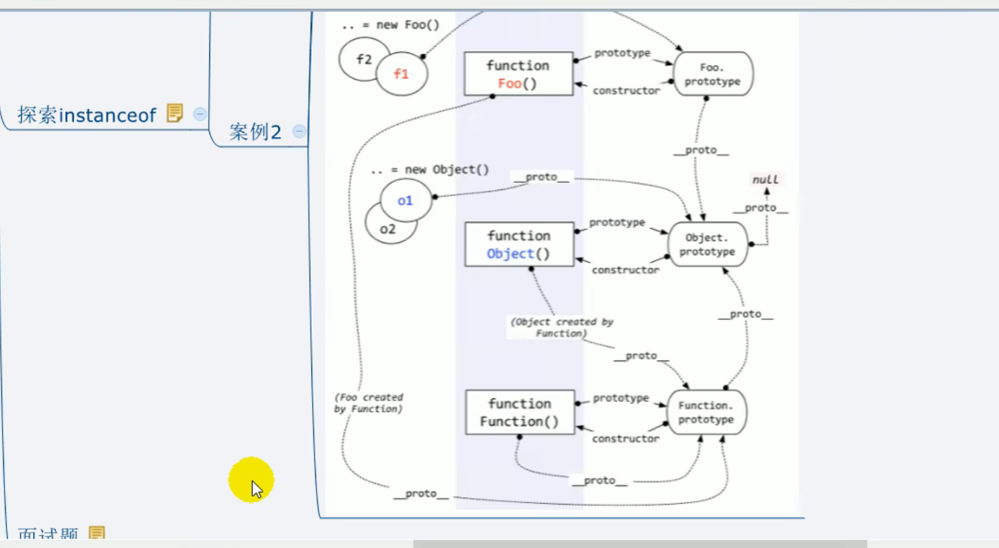

<!DOCTYPE html>
<html lang="en">
<head>
    <meta charset="UTF-8">
    <meta name="viewport" content="width=device-width, initial-scale=1.0">
    <title>Document</title>
</head>
<body>
    <script>

/*
        instanceof是如何判断的?
        表达式: A instanceof B
        如果B函数的显式原型对象在A对象的原型链上, 返回true, 否则返回false
        Function是通过new自己产生的实例 
*/


         /*
 案例1
  */
        function Foo() {  }
            var f1 = new Foo()
            console.log(f1 instanceof Foo) // true
            console.log(f1 instanceof Object) // true

             /*
 案例2
  */
            console.log(Object instanceof Function) // true
            console.log(Object instanceof Object) // true
            console.log(Function instanceof Function) // true
            console.log(Function instanceof Object) // true
            /* 函数的原型对象默认都是Object实例   构造函数（包括object）都是function的实例 */
            function Foo() {}
            console.log(Object instanceof  Foo) // false


            // Ⅴ-相关面试题  图解 

                /*
    测试题1
    */
            function A () {}
            A.prototype.n = 1
            let b = new A()
            A.prototype = { n: 2, m: 3}
            let c = new A()
            console.log(b.n, b.m, c.n, c.m) // 1 undefined 2 3


             /*
  测试题2
  */
            function F (){}
            Object.prototype.a = function(){
            console.log('a()')
            }
            Function.prototype.b = function(){
            console.log('b()')
            }
            
            let f = new F()
            f.a() //a()  在f的隐式原型链上是否能找到Object.prototype
            f.b() //f.b is not a function -->找不到
            F.a() //a()
            F.b() //b()

            console.log(f)
            console.log(Object.prototype)
            console.log(Function.prototype)
/* 理解：Object是Function的一个实例 但是Function不是Object的实例 */
    </script>
</body>
</html>